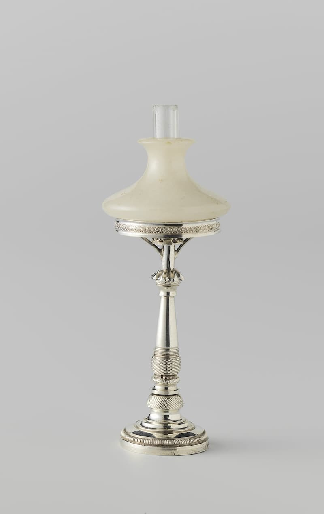
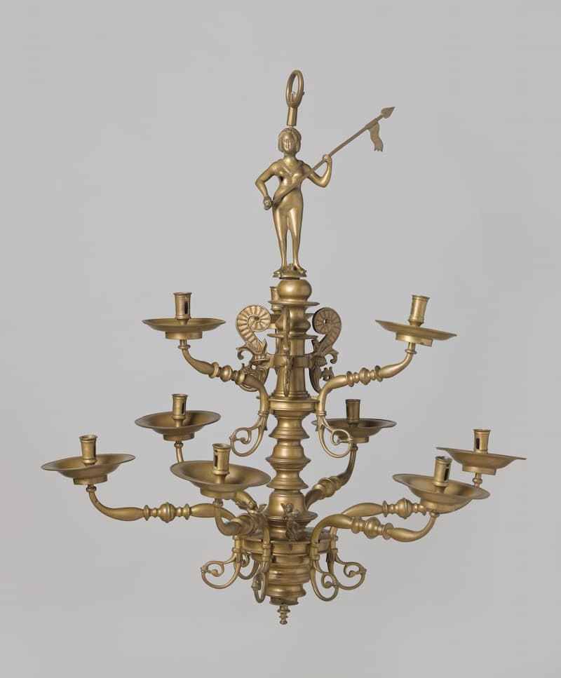

Lamp

Staande lamp op een ronde voet met profieltjes. De stam is balustervormig en geprofileerd. Hij heeft een stenen kap. Gemerkt: H.J. Bing en een zwaard.
Bron: Naar een beschrijving van Rijksmuseum, Public Domain.
Anders Gemeubileerd
Een verzameling zeldzame meubels en decorstukken die je niet zomaar overal tegenkomt.
De allermooiste verlichting die je niet eerder hebt gezien!

Staande lamp op een ronde voet met profieltjes. De stam is balustervormig en geprofileerd. Hij heeft een stenen kap. Gemerkt: H.J. Bing en een zwaard.
Bron: Naar een beschrijving van Rijksmuseum, Public Domain.

Twee engeltjes zitten op een bol, eentje blaast op een bazuin. Onder de bol zit schroefdraad om ze aan de onderste armenring vast te maken. Het bazuinengeltje heeft drie driehoekjes, het andere geen markering en is mogelijk later toegevoegd. De overige vier engeltjes ontbreken.
Bron: Naar een beschrijving van Rijksmuseum, Public Domain.